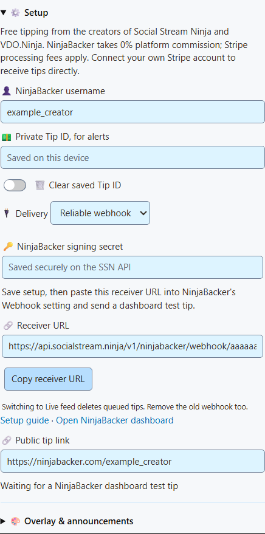

1. Connect your account
Start here with the SSN desktop app or Chrome extension. Keep SSN on while streaming.
- Open NinjaBacker. Create your account and finish Stripe setup to accept payments.
- In the NinjaBacker dashboard, open Social Stream Ninja and copy your Private Tip ID.
- In SSN, open Money > Shops & support > Connected platforms > NinjaBacker donations > Setup. Enter your username and Private Tip ID.
- Leave Delivery on Live feed (simple), turn on NinjaBacker donations, and click Save setup.
If Connected platforms is hidden, switch to Full mode in SSN.
Live feed needs no webhook. It shows new tips while connected; it does not replay tips received while SSN was off.

2. Optional: use a webhook
Choose Reliable webhook to queue tips for up to seven days while SSN is off.
- In NinjaBacker, open Webhook. Under Webhook Signature Secret, click Generate and copy the secret. If you already use a secret, copy that one.
- In SSN's NinjaBacker setup, choose Reliable webhook, paste the signing secret, and click Save setup.
- Click Copy receiver URL in SSN. Paste it into NinjaBacker's Webhook URL field and click Save.


The receiver URL starts with:
https://api.socialstream.ninja/v1/ninjabacker/webhook/...Tip Jar, chat dock and other display URLs go in OBS. They cannot receive webhook requests.
Switch back to Live feed
Switching deletes queued tips in the SSN receiver. Clear and save the old Webhook URL in NinjaBacker too.
3. Add your display to OBS
- For alerts, choose NinjaBacker donations under OBS overlay for in Shops & support. Copy the overlay link.
- For a running goal, open Money > Tip Jar and Goal Meter. Choose your style and goal, then copy its link.
- In OBS, add a Browser Source and paste the display link. Keep SSN and the display on the same session.
Tip Jar styles and goal settings
Share your public NinjaBacker tip page with viewers. Keep overlay links in OBS and receiver URLs in the webhook field.
4. Check your setup
Open the SSN NinjaBacker alert overlay. In NinjaBacker, open Testing and click Send Test Tip. Expect a test alert in that overlay.
Test tips do not add money to the Tip Jar, appear as paid chat donations, or trigger paid rewards.
No test alert?
Keep SSN on and NinjaBacker donations enabled. Check the username and Tip ID match the same account. For webhooks, refresh Delivery History in NinjaBacker and check the receiver URL and signing secret.
HTTP 405 or a display URL error?
Copy the Receiver URL from SSN's Reliable webhook setup, save it in NinjaBacker, and send a new test tip. Saving a new URL stops retries to the old destination.

Tips appear in chat but not in the goal?
Check the Tip Jar session and source, donation type and paid event filters. Use a money goal for tip amounts. Refunds do not subtract from SSN alerts or goals.